Unofficial hero finder
Which hero answers your call?
Questions about how you aim, move, help and win, checked against every hero's kit. At the end one card turns over, with the reasons written in chalk.
An unfinished reading is waiting.
That code doesn't look right. Check it was copied in full.
Every playable hero

The rosterComing from another game?
Find your Deadlock twin
Pick the game you know, find the hero you main, and see which Deadlock heroes play the same way.